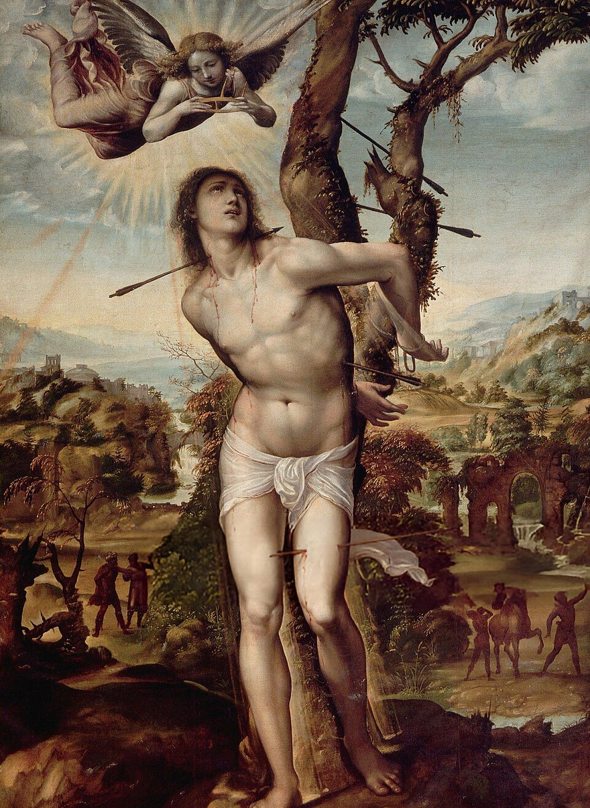

Saint / folklore
San Sebastiano

Background
Sebastian was an early Christian saint and martyr. According to traditional belief, he was killed during the Diocletianic Persecution of Christians. He was initially tied to a post or tree and shot with arrows, though this did not kill him.
St Sebastian was a Roman soldier martyred under Diocletian. The legend says he was first shot with arrows and survived, nursed by a widow, and was later clubbed to death. From the Middle Ages he was invoked against plague, which people imagined as arrows of divine wrath. Renaissance painters made him one of the most frequently depicted saints: a beautiful young man bound to a column or tree.
He is the patron of San Sebastiano al Vesuvio, a town on the volcano’s western slope. In the eruption of March 1944, the last eruption of Vesuvius to date, a lava flow destroyed much of the town. The townspeople carried his statue out to face the advancing lava, as Vesuvian communities had done with their patrons for centuries. The town was rebuilt after the war.
Saint Sebastian · San Sebastiano al Vesuvio · Eruzione del Vesuvio del 1944 (it)
· Wikipedia ↗ · Search Google ↗In Naples ’44
The patron of the town in the lava’s path; his processional image is carried out to confront the 1944 eruption, and the smuggling-in of a rival San Gennaro image has to be hidden under a sheet to avoid giving him offence.
Appears in 1 diary entry.
-
March 22 1944Lewis travels through falling ash and volcanic debris to report on the threatened town of San Sebastiano as lava approaches.
processional image confronting the eruption
Use ← → to move between pages